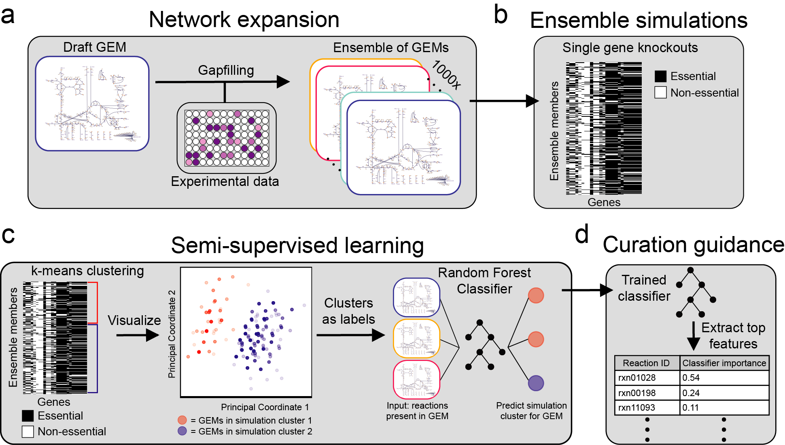
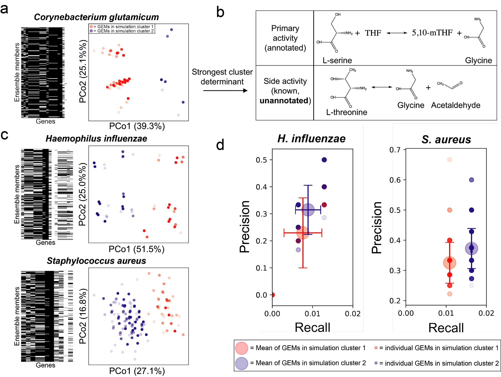
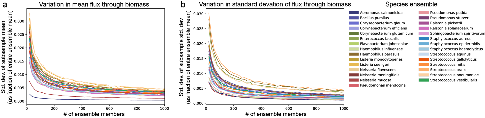

Title:
Guiding the refinement of biochemical knowledgebases with ensembles of metabolic networks and semi-supervised learning
Authors:
Gregory L. Medlock,1 Jason A. Papin1,2,3,*
1Department of Biomedical Engineering, University of Virginia, Charlottesville, VA, USA
2Department of Medicine, Division of Infectious Diseases & International Health, University of Virginia, Charlottesville, VA, USA
3Department of Biochemistry & Molecular Genetics, University of Virginia, Charlottesville, VA, USA
*Correspondence: papin@virginia.edu
Abstract
Mechanistic models are becoming common in biology and medicine. These models are often more generalizable than data-driven models because they explicitly represent known interactions between components. While this generalizability has advantages, it also creates a dilemma: how should efforts be focused to improve model performance? We present a semi-supervised machine learning approach to this problem and apply it to genome-scale metabolic network reconstructions. We generate an ensemble of candidate models consistent with experimental data, then perform in silico simulations for which improved predictiveness is desired. We apply semi-supervised learning to these simulation results to identify structural variation in ensemble members that maximally influences variance in simulation outcomes across the ensemble. These structural variants are high priority candidates for curation through targeted experimentation. We demonstrate this approach by applying it to 29 bacterial species to identify curation targets that improve gene essentiality predictions. Our approach represents a fully automated, scalable, and performance-driven recommendation system for curating hypothesis-driven models.
Significance
Mechanistic computational models, such as metabolic and signaling networks, are becoming common in biology. These models contain a comprehensive representation of components and interactions for a given system, making them widely applicable and often more predictive than simpler models. However, their size and connectivity makes it difficult to identify which parts of a model need to be changed to improve performance further. We developed a strategy to guide this process and applied it to metabolic models for a set of bacterial species. We use it to identify model components that should be investigated, and show that it improves predictive performance. This approach can systematically aide the curation of metabolic models without relying on the intuition of the curator.
Introduction
Genome-scale metabolic network reconstructions (GENREs) are knowledgebases describing metabolic capabilities and their biochemical basis for entire organisms. GENREs can be mathematically formalized and combined with numerical representations of biological constraints and objectives to create genome-scale metabolic models (GEMs). These GEMs can be used to predict biological outcomes (e.g. gene essentiality, growth rate) given an environmental context (e.g. metabolite availability) (1). GEMs are now used widely for well-studied organisms such as Escherichia coli and Saccharomyces cerevisiae, but GEMs for most other organisms are much more taxing to create and curate, partially due to the exhaustive and manually-driven steps required (2).
Systems for automatically generating GEMs of sufficient quality for limited purposes have been developed (3), but the methods used to further curate GEMs are nearly universally under-reported in the literature. Curation methods for GEMs that take researchers many months to years to develop are often summarized qualitatively with limited description. This is not surprising, given the difficulty in prioritizing areas for curation of network-based, highly connected mechanistic models such as GEMs.
In practice, heuristics are typically used to prioritize curation, such as curating portions of the GEM directly involved in the manipulation of a metabolite, gene, or pathway of known interest. These heuristics, combined with targeted literature searches, allow task-based curation and GEM evaluation, which is increasingly supported in software related to genome-scale metabolic modeling (4, 5). However, identifying the network components that influence the predictions of interest is not an intuitive process because biological networks are generally highly connected.
One way to view this issue is through the lens of a sensitivity analysis, asking how much variation in the parameters of a model will impact a simulation of interest. Such an approach has been developed and applied to dynamic models of biological networks (6), which relies on quantified uncertainty in the structure of a model. Uncertainty quantification has been applied at the level of individual components within a GEM, either by considering the probability of a function being present in a network based on sequence comparisons (7) or by leveraging network structure to more accurately estimate these probabilities (8). However, an approach that unifies a probabilistic views of GEM structure with simulations performed with them, which would enable structural sensitivity analysis for GEMs, has not been developed to our knowledge.
Recently, we developed a framework for the generation of ensembles of GEMs which can be applied to improve predictive performance over that of an individual GEM (9). This approach is analogous to the use of ensembles of data-driven models (10) or hypothesis-driven models such as signaling networks (11), and has been applied to metabolic networks for dynamic modeling as well (12). Here, we extend our framework to prioritize curation of network-based biological models by coupling ensemble simulations with semi-supervised learning. One of the central tenets of systems biology is that models represent our hypotheses about how an organism functions. As such, we can use these models to simulate the behavior we expect according to our hypotheses. Our approach takes advantage of this, generating many hypotheses (e.g. an ensemble) and coupling them with machine learning to identify experiments that optimally improve our understanding of an organism.
Results
Our approach, which can be generalized to any mechanistic model and simulation task of interest, is summarized as follows. First, we generate many models that are each consistent with experimental data, forming an ensemble of models (Figure 1a). We then perform a set of simulations using the ensemble that are related to a task of interest, such as drug target identification or production of a metabolite of commercial interest (Figure 1b). Using the output of these simulations, we perform unsupervised learning to generate phenotypic clusters of models, where clustering is determined by similarity of simulation profiles across the entire set of simulations (Figure 1c). We then apply supervised learning to predict simulation cluster membership for each model using the values of variable parameters in that model as input (Figure 1c). The relative importance of these model parameters in the supervised learning model indicates the impact that uncertainty in that parameter has on simulation outcomes across the ensemble (Figure 1d). In other words, resolving the true state of these parameters will maximally reduce uncertainty in the simulations performed with the ensemble. Here, we apply this approach to the task of reducing uncertainty in predicted gene essentiality for 31 bacterial species (Figure 1a-d). We generate an ensemble for each species using previously published growth phenotyping data (13), predict the effect of genome-wide single gene knockouts, then apply semi-supervised learning as described above.
 |
Figure 1. Approach for a simulation-guided recommendation system for curation of genome-scale metabolic models. a) A draft GEM is generated using ModelSEED. Algorithmic gapfilling is applied so that the GEM can recapitulate experimental observations, and the process is repeated to identify alternative solutions. These alternative solutions are assembled into an ensemble of GEMs, each of which contains the original content of the draft GEM and a unique set of gapfilled reactions. b) Single gene knockouts are performed using the ensemble, in which production of biomass is evaluated when reactions requiring each gene are inactivated. c-d) Semi-supervised approach for identifying curation targets based on ensemble simulations. Unsupervised machine learning is applied to the ensemble simulation results, generating two simulation clusters (cluster 1 [red] and cluster 2 [blue]). Here, principal coordinate analysis is used to visualize the similarity of simulation profiles for all models within an ensemble. Simulation clusters are then used as labels in supervised machine learning, which are predicted using model reaction content as input to a random forest classifier. Curation is prioritized based on the features contributing to classifier performance. |
Given our objective of identifying the most impactful experiment or curation effort to improve the quality of our models, we required that our ensembles were large enough to saturate the space of unique simulation results (i.e. predicted behavior) and model structures (i.e. hypotheses). Toward this end, we first subsampled the ensemble for each species and determined the unique reaction content within each subsample (Figure 2a). We found that unique reaction content plateaued or nearly plateaued with ensembles containing as few as 100-200 models, suggesting the ensembles we generated sufficiently saturate the space of unique reactions. In other applications, we suspect that organisms with lower quality GEMs (e.g. more gaps in their metabolic network) or less phenotypic profiling data may require additional sampling to saturate this space.
For gene essentiality simulations, the number of variable predictions (e.g. number of genes for which at least one ensemble member disagrees with another member) plateaued in a similar manner (Figure 2b). We also performed subsampling for predictions of genes essential for biomass production, which exhibited similar properties of convergence (Supplemental Figure 1a-b). Taken together, these subsampling-based results confirm that ensembles containing 1000 models generated using our reconstruction pipeline sufficiently represent the network structure space (e.g. unique reactions) and prediction space (e.g. essentiality profiles) possible given the input data. This behavior is consistent with our previous work examining the performance of ensembles of GEMs for Pseudomonas aeruginosa, in which various aspects of ensemble performance nearly plateaued with only 50 GEMs (9). However, in order to ensure that an adequate number of samples are included for downstream semi-supervised machine learning analyses, we maintain the full ensemble of 1000 GEMs for each species in all analyses.
|
Figure 2. Subsampling of ensemble content and simulations to demonstrate exhaustive sampling of the solution space. a) The variable reaction content in ensemble members as a function of increasing ensemble size. A variable reaction is any reaction that has a variable state across any member of the subsampled group (e.g. it is off in some members and on in some members, but neither entirely off nor entirely on). For each species, the mean number of variable reactions in subsamples of GEMs is shown by the solid line, with the standard deviation shown as light fill of the same color above and below the mean. Subsampling was performed with 1000 draws per subsample size. Ensembles were sampled at intervals of 20 members, e.g. 20, 40, 60… until reaching the size of the entire ensemble. b) Variability in gene essentiality simulations within subsamples of ensemble members. Using the same subsampling procedure as in panel a, the number of genes with at least one GEM in the subsample with a simulation outcome different than the rest (e.g. non-consensus) was determined. The mean for each subsample size is shown by the solid line, with the standard deviation shown as light fill of the same color above and below the mean. |
Each species’ ensemble contained 19.27 +/- 8.66 genes (mean +/- standard deviation) for which at least one GEM’s prediction of essentiality disagreed with another GEM in the ensemble, representing 3.11 +/- 1.39% of total metabolic gene content. For the unsupervised machine learning portion of this analysis, we performed k-means clustering on the gene essentiality simulations from each species’ ensemble separately. We chose k = 2 to generate two clusters for each species, each of which contain GEMs from the ensemble with similar gene essentiality simulation profiles. The results are visualized for a subset of species using principal coordinate analysis (PCoA) in Figure 3a and 3c. Although we chose k = 2 here to illustrate our approach, the separation of models in PCoA space suggests that for many species, determining a larger number of clusters might be advantageous. For example, while k = 2 generates two maximally-different simulation clusters, there may be more than two distinct in silico phenotypic clusters that represent significant differences in hypothesized model behavior. Accounting for the presence of these smaller clusters may identify important network features that would otherwise only be found through multiple iterations of clustering with k = 2 and refinement of the ensemble.
We next sought to identify the reactions that vary across an ensemble that are associated with membership in each cluster. For this objective, we trained a random forest classifier(14) to predict cluster membership for each GEM from its reaction content. The classifier for every species had an out-of-bag accuracy above 97%, indicating that gene essentiality cluster membership can easily be predicted from reaction content within the ensembles. To prioritize candidate reactions for curation of each species’ ensemble, we examined the features that contributed the most to classifier performance.
One way to resolve the identity of these prioritized reactions is a targeted literature search, which might reveal information that has not been incorporated into genomic or metabolic databases. For example, in the ensemble for Corynebacterium glutamicum, the strongest driver of essentiality cluster membership was inclusion of the reaction L-threonine acetaldehyde-lyase, which converts L-threonine to glycine and acetaldehyde (Figure 3b). This activity is known to occur in C. glutamicum, but was not annotated in its genome because the enzyme primarily uses L-serine as a substrate (serine hydroxymethyltransferase, Figure 3b), while conversion of L-threonine is considered a side activity (15, 16). The correct function was present in 97 of the ensemble members in the blue cluster and 0 members of the red cluster, representing 84.3% of the blue cluster. Given that these 97 models only represent 9.8% of the ensemble for C. glutamicum, this function would have been overlooked if ensemble features were chosen by consensus across the ensemble rather than via semi-supervised learning. This result highlights the ability of our approach to identify discrepancies between databases and the literature (such as under-annotated promiscuous enzyme activity) while also prioritizing investigation into these issues based on their contribution to prediction uncertainty.
Our approach is focused on prioritizing curation efforts to reduce uncertainty in model simulations. However, whether this approach generally improves the predictive performance of GEMs is unclear. To investigate this question, we evaluated the performance of a subset of ensembles for which experimental genome-wide gene essentiality datasets derived from in vitro growth on a rich medium were available. Suitable datasets were identified for Staphylococcus aureus (17) and Haemophilus influenzae (18). Each GEM in the ensembles for these species was evaluated using precision (the ratio of true positives to the sum of true and false positives) and recall (the ratio of true positives to the sum of true positives and false negatives; Figure 3d). For both species, ensemble members had variable precision and recall, and simulation cluster membership is associated with a difference in both precision and recall (p < 0.0001, Mann-Whitney U-test with false discovery rate control via Benjamini Hochberg procedure). Based on this result, selecting models for future analyses by excluding one of the two simulation clusters will improve performance as evaluated against experimental data. Thus, our semi-supervised curation guidance approach will improve model performance when the true state of a parameter is associated with the cluster with better performance.
Discussion
The analysis we performed demonstrates just one possible path towards the goal of reducing uncertainty in our understanding of biochemical networks within the semi-supervised framework we propose. Changes to the process can be rationalized for new goals; for example, we previously demonstrated that introducing random weights on inclusion of each reaction during algorithmic gapfilling can generate more diverse ensembles (9). If none of the ensemble members generated by our pipeline adequately represented metabolism for an organism (e.g. their gene essentiality simulation results were vastly different than experimental observations), we could introduce such random variance to increase the likelihood of generating some ensemble members that reflect biological reality. Such an approach may be necessary for organisms with metabolic repertoires differing substantially from those represented in popular biochemical databases (e.g. gut microbes, intracellular parasites). Inclusion of methods for proposing novel hypothetical enzymatic function could complement our approach for such organisms (19, 20).
Our approach builds on work in other disciplines in which uncertainty quantification and reduction are applied to understand or improve the behavior of domain-specific models. For example, in petroleum engineering, a similar ensemble-based approach is used to derive value of information (VOI) estimates for resolving parameter values in models of oil reservoir management (21). In the application of our framework demonstrated here, we effectively derive VOI estimates for resolving reaction presence or absence. Taking a VOI approach for biological discovery and to improve models used in various facets of biotechnology could help automate workflows and substantially reduce costs by prioritizing experiments. As the diversity and depth of organisms that mechanistic models such as GEMs are being constructed for increases, such approaches will be vital to continue to improve their quality and predictiveness (22, 23).
 |
Figure 3. Application of the semi-supervised curation guidance pipeline to bacterial species. a & c) Ensemble gene essentiality simulations and unsupervised learning for three representative species. Each heatmap displays essentiality simulations for each ensemble member (row label) after inactivating a single gene (column label). Black cells indicate genes predicted to be essential while white cells indicate genes predicted to be non-essential. Principal coordinate analysis (PCoA) plots next to each heatmap show the similarity between gene essentiality simulation profiles for each ensemble member. Within each PCoA plot, each point represents an ensemble member, colored by cluster membership as determined with k-means clustering (k=2). Percent variance in the pairwise distance matrix explained by each principal coordinate is indicated in parentheses. See Methods for analysis details. b) Example of a network feature driving simulation cluster membership. The top reaction, catalyzed by serine hydroxymethyltransferase, is the primary activity of the enzyme, which was annotated in the draft GEM. The bottom reaction is a promiscuous function of the same enzyme, which was the most important reaction in determining cluster membership (k=2) for Corynebacterium glutamicum. (abbreviations; THF is tetrahydrofolate and 5,10-mTHF is 5,10-Methylenetetrahydrofolate). Water is excluded from reactants in the top reaction to simplify visualization. d) Evaluation of performance of GEMs in each simulation cluster compared to genome-wide gene essentiality data. Essentiality datasets from in vitro experiments were collected for Haemophilus influenzae and Staphylococcus aureus. Precision (TP/[TP + FP], TP = true positives, FP = false positives) and recall (TP/[TP+FN], FN = false negatives) were calculated for each ensemble member for each species. Small red and blue circles indicate an individual ensemble member, colored by simulation cluster membership. Large red and blue circles indicate mean behavior for ensemble members from each cluster, and error bars of same color extend above and below the mean by one standard deviation. |
Methods
Organism selection
Organisms with available growth phenotype data were extracted from Plata, et al. (13). To identify a representative genome for each species, we queried the PATRIC database (24) with the genus and species name for all organisms in the study, then selected a single genome from PATRIC based on decision criteria described as follows. When a reference genome was assigned for the species, the genome identifier for the reference genome was chosen. If no reference genome was available, a genome listed as “representative” was chosen. When multiple genomes with the “representative” status were available, we chose the first genome listed. If a selected representative genome contained more than 10 contigs, a representative genome with fewer contigs was chosen. Strain identifiers were not provided in the study from which data was drawn, so these selection criteria were developed to select the highest-quality genome available for the species in the study. Selected genome identifiers are available in Supplemental Table S1.
Organism selection was further refined by only including those from Plata, et al. (13) which grew in at least 10 of the single-carbon source Biolog conditions. The experimental growth threshold originally used in the paper from which data were drawn was used (>10 colorimetric units of tetrazolium dye reduction; originally scaled between 0 and 100 based on positive [100 units] and negative [0 units] controls). This choice was made with the recognition that the tetrazolium dye measures redox activity and not actual biomass production; for the purpose of our study, we assume that detectable redox activity above 10 relative units would require biomass production. After this initial selection step, Brachybacterium faecium and Gordonia bronchialis were also removed from the analysis because no solutions existed to enable biomass production using the universal reaction bag for either species. Bacillus megaterium was excluded because only one gapfill solution was found across all gapfilling cycles. Similarly, Stenotrophomonas maltophilia was excluded because only two unique gapfill solutions were found. In total, the full analysis pipeline was applied to 29 species.
Generation of draft genome-scale metabolic models
Draft-quality genome-scale metabolic models (GEMs) were generated using the ModelSEED reconstruction pipeline (3) accessed through PATRIC in August, 2018 (24). PATRIC servers were queried to generate GEMs formatted for use in cobrapy (25) using the Mackinac package (26).
Representative media
The base medium for biolog conditions was derived from the ModelSEED media compositions for biolog plates. Flux variability analysis was used to identify metabolites which had essential uptake reactions in all complete media-gapfilled reconstructions from PATRIC. Based on this analysis, we added Heme and H2SO3 to the base biolog composition used in silico (i.e. uptake of heme and H2SO3 was allowed in all conditions). For each single carbon source, appropriate identifiers were found in the ModelSEED database. For metabolites with ambiguous chemical identities (e.g. metabolites that Biolog does not provide isomer composition for, such as D-Galactose), only one isomer was selected from ModelSEED to represent the condition. Carbon sources that are complex mixtures of metabolites (gelatin) or polymers (pectin) were excluded from analyses.
Algorithmic gapfilling
Each individual gapfilling step, corresponding to enabling biomass production on a single media source, was performed using the following algorithm adapted from our previous work (9). This algorithm is in essence the same as parsimonious flux balance analysis (pFBA, (27)), except that the parsimonious assumption of minimization of the sum of all fluxes is only applied to reactions from a universal reaction bag that are activated to allow flux through the network.
Algorithm 1: pFBA-based gapfilling
Min , subject to:
Where is the stoichiometric matrix representing the model to be gapfilled,  is the vector of fluxes through reactions in , is the stoichiometric matrix representing the reaction database from which reactions are activated to fill gaps,
is the vector of fluxes through reactions in , is the stoichiometric matrix representing the reaction database from which reactions are activated to fill gaps,  is the vector of fluxes through reactions in , is flux through the biomass reaction, and are lower and upper bounds of flux through reactions in the original model, respectively, and and are lower and upper bounds of flux through reactions in the reaction database .
is the vector of fluxes through reactions in , is flux through the biomass reaction, and are lower and upper bounds of flux through reactions in the original model, respectively, and and are lower and upper bounds of flux through reactions in the reaction database .
The formulation is identical to the original formulation of pFBA, except for four key differences. First, we only require an arbitrarily low amount of flux through biomass, rather than the maximum amount of biomass, meant to represent a binary growth condition. Second, we introduce a universal reaction bag () and associated flux variables for each reaction in U (). Third, only fluxes through reactions in are penalized; fluxes through reactions in the model being gapfilled () are not penalized. Fourth, rather than explicitly splitting all reactions into irreversible reactions, we take advantage of solver-level interfaces implemented in cobrapy through the optlang package (28) that allow introduction of absolute values into the objective (this is done out of convenience in our implementation; this aspect of the problem formulation is identical to the same aspect in pFBA at the solver level) (28). As in Biggs et al. (9), the solution to this optimization problem activates reactions in the universal reaction bag with the minimum sum of fluxes necessary to enable flux through the biomass reaction in a given condition.
Generating ensembles from gapfill solutions
For each organism, the entire algorithm for generating an ensemble is as follows:
For i in number_of_ensemble_members:
Randomly order a selection of J media conditions
For a single condition j in J:
- Set model bounds to represent media condition
- Optimize using pFBA-based gapfilling
- Add activated reactions/remove flux
minimization penalty for those reactions
Store solution from this iteration
Create an ensemble where each member contains the set of
reactions added over an iteration through all media conditions.
We performed this procedure for 1000 cycles for each species (i.e. number_of_ensemble_members = 1000). All species included in the study grew in at least 10 in vitro single carbon source media conditions (i.e. J contained at least 10 conditions); for each species, all positive growth conditions were used to gapfill during each cycle. After removing duplicate gapfill solutions, all species included for further analyses had 970-1000 members in their ensemble (species not considered after this point are detailed in Organism selection).
Ensemble Flux Balance Analysis and Ensemble Gene Essentiality
Ensemble flux balance analysis and ensemble gene essentiality screens were performed using Medusa v0.1.2 (unpublished, https://github.com/gregmedlock/Medusa) and cobrapy v0.13 (25). The GNU linear programming kit (GLPK) was used as the numerical solver in all cases. For all simulations, rich medium was used (1,000 mmol/gram dry weight*hr uptake allowed for all metabolites with a transport reaction; commonly referred to as “complete medium”). An arbitrarily low cutoff for flux through biomass in gene essentiality screens was used (1E-6 units of biomass/hr), but varying this quantity between 1E-10 and 1E-3 did not substantially affect essentiality results.
Subsampling of ensemble features and predictions
For all subsampling performed, 1,000 random draws were made with replacement at each subsample ensemble size. Ensemble sizes for each subsampled population ranged from 20 to 1,000, with subsampling performed in intervals of 20 members (i.e. 20, 40 , 60 … 1,000 members). When the subsample size exceeded the actual ensemble size (e.g. some species had slightly less than 1,000 members), all ensemble members were subsampled.
Clustering of ensemble gene essentiality predictions and prediction of clusters
Ensemble gene essentiality predictions were clustered into two clusters using k-means clustering as implemented in the KMeans class of scikit-learn v0.19.2 (29) (max iterations=300, convergence tolerance=1E-4, Elkan’s(30) algorithm). Gene essentiality predictions were converted to binary data (essential or nonessential) using a cutoff of flux through biomass of 1E-6 mmol/(gDW*hr). Random forest classification was performed to predict cluster membership using active features in each ensemble member (e.g. presence or absence of a reaction was assigned as True or False in the input, respectively) (14). The RandomForestClassifier class from scikit-learn v0.19.2 was used (500 trees, quality of splits determined with the gini criterion, no max depth, minimum of 2 samples per split, minimum of 1 sample per leaf, sqrt(number of features) searched at each split, training samples determined for each tree via bootstrap selection with replacement). The default metric in scikit-learn’s RandomForestClassifier for determining feature importance, the mean decrease in node purity, was used to calculate feature importance in this study (31).
Visualization of gene essentiality clusters
Principal coordinate analysis (PCoA) (32) was used to visualize ensemble gene essentiality results. PCoA as implemented in scikit-bio v0.5.4 (https://github.com/biocore/scikit-bio) was performed using the hamming distance (33) to compute the pairwise distance matrix.
Gene essentiality datasets
Gene essentiality datasets were identified for species in this study from the Online Database of Gene Essentiality (OGEE, (34)). In cases where multiple datasets were available for a given species, the dataset generated using the same strain of the species selected for GENRE reconstruction was selected. If multiple datasets still existed for a species, a single dataset was chosen based on media richness (e.g. more complex media were selected over simpler media). We excluded the essentiality dataset for Streptococcus pneumoniae because the total set of screened genes was not included (35). In brief, the authors developed a kanamycin insertion cassette targeted for 693 genes that were selected based having >40% amino acid sequence identity with a set of well-studied organisms. The authors reported the identity of only the essential genes, so non-essential genes that would be in the dataset could not be included in our set of predictions. Based on these selection criteria and limitations, we selected datasets from OGEE for Staphylococcus aureus (17) and Haemophilus influenzae (18).
Data and analysis availability
All data, analysis scripts, results, and models generated are available at https://github.com/gregmedlock/ssl_ensembles and will be archived on Zenodo upon acceptance for publication after peer review. Archived results include the semi-supervised analysis pipeline results for all species in the study (rather than only the representative examples shown here).
Acknowledgements
We acknowledge funding from National Institutes of Health R01GM108501, T32LM012416, the Thomas F. and Kate Miller Jeffress Memorial Trust, and a Wagner predoctoral fellowship to GLM. We thank Matthew Biggs for thoughtful discussion related to the manuscript and Maureen Carey for helpful comments on drafts.
Author Contributions
Conceptualization, G.L.M and J.P; Data Curation, G.L.M; Formal Analysis, G.L.M; Investigation, G.L.M; Methodology, G.L.M; Software, G.L.M; Validation, G.L.M; Visualization, G.L.M; Writing - original draft, G.L.M; Writing - Review & Editing, G.L.M and J.P; Funding Acquisition, G.L.M and J.P; Project Administration, J.P; Resources, J.P; Supervision, J.P.
Competing Interests Statement
The University of Virginia has filed a U.S. Provisional Patent Application (No. 62/744,393) related to this manuscript which describes a curation guidance system for biological network models of which G.L.M and J.P. are inventors.
References
1. Oberhardt MA, Palsson BØ, Papin JA (2009) Applications of genome‐scale metabolic reconstructions. Mol Syst Biol 5(1):320.
2. Thiele I, Palsson BØ (2010) A protocol for generating a high-quality genome-scale metabolic reconstruction. Nat Protoc 5(1):93–121.
3. Henry CS, et al. (2010) High-throughput generation, optimization and analysis of genome-scale metabolic models. Nat Biotechnol 28(9):977–982.
4. Lieven C, et al. (2018) Memote: A community-driven effort towards a standardized genome-scale metabolic model test suite. bioRxiv:350991.
5. Wang H, et al. (2018) RAVEN 2.0: A versatile toolbox for metabolic network reconstruction and a case study on Streptomyces coelicolor. PLoS Comput Biol 14(10):e1006541.
6. Babtie AC, Kirk P, Stumpf MPH (2014) Topological sensitivity analysis for systems biology. Proc Natl Acad Sci U S A 111(52):18507–18512.
7. Benedict MN, Mundy MB, Henry CS, Chia N, Price ND (2014) Likelihood-based gene annotations for gap filling and quality assessment in genome-scale metabolic models. PLoS Comput Biol 10(10):e1003882.
8. Plata G, Fuhrer T, Hsiao T-L, Sauer U, Vitkup D (2012) Global probabilistic annotation of metabolic networks enables enzyme discovery. Nat Chem Biol 8(10):848–854.
9. Biggs MB, Papin JA (2017) Managing uncertainty in metabolic network structure and improving predictions using EnsembleFBA. PLoS Comput Biol 13(3):e1005413.
10. Dietterich TG (2000) Ensemble Methods in Machine Learning. Multiple Classifier Systems (Springer Berlin Heidelberg), pp 1–15.
11. Kuepfer L, Peter M, Sauer U, Stelling J (2007) Ensemble modeling for analysis of cell signaling dynamics. Nat Biotechnol 25(9):1001–1006.
12. Tran LM, Rizk ML, Liao JC (2008) Ensemble modeling of metabolic networks. Biophys J 95(12):5606–5617.
13. Plata G, Henry CS, Vitkup D (2015) Long-term phenotypic evolution of bacteria. Nature 517(7534):369–372.
14. Breiman L (2001) Random Forests. Mach Learn 45(1):5–32.
15. Dong X, Quinn PJ, Wang X (2011) Metabolic engineering of Escherichia coli and Corynebacterium glutamicum for the production of L-threonine. Biotechnol Adv 29(1):11–23.
16. Simic P, Willuhn J, Sahm H, Eggeling L (2002) Identification of glyA (encoding serine hydroxymethyltransferase) and its use together with the exporter ThrE to increase L-threonine accumulation by Corynebacterium glutamicum. Appl Environ Microbiol 68(7):3321–3327.
17. Chaudhuri RR, et al. (2009) Comprehensive identification of essential Staphylococcus aureus genes using Transposon-Mediated Differential Hybridisation (TMDH). BMC Genomics 10:291.
18. Akerley BJ, et al. (2002) A genome-scale analysis for identification of genes required for growth or survival of Haemophilus influenzae. Proc Natl Acad Sci U S A 99(2):966–971.
19. Hatzimanikatis V, et al. (2005) Exploring the diversity of complex metabolic networks. Bioinformatics 21(8):1603–1609.
20. Jeffryes JG, et al. (2015) MINEs: open access databases of computationally predicted enzyme promiscuity products for untargeted metabolomics. J Cheminform 7:44.
21. He J, et al. (2018) Quantifying Expected Uncertainty Reduction and Value of Information Using Ensemble-Variance Analysis. SPE Journal. Available at: https://www.onepetro.org/journal-paper/SPE-182609-PA.
22. Monk J, Nogales J, Palsson BO (2014) Optimizing genome-scale network reconstructions. Nat Biotechnol 32(5):447–452.
23. Magnúsdóttir S, et al. (2017) Generation of genome-scale metabolic reconstructions for 773 members of the human gut microbiota. Nat Biotechnol 35(1):81–89.
24. Wattam AR, et al. (2017) Improvements to PATRIC, the all-bacterial Bioinformatics Database and Analysis Resource Center. Nucleic Acids Res 45(D1):D535–D542.
25. Ebrahim A, Lerman JA, Palsson BO, Hyduke DR (2013) COBRApy: COnstraints-Based Reconstruction and Analysis for Python. BMC Syst Biol 7:74.
26. Mundy M, Mendes-Soares H, Chia N (2017) Mackinac: a bridge between ModelSEED and COBRApy to generate and analyze genome-scale metabolic models. Bioinformatics 33(15):2416–2418.
27. Lewis NE, et al. (2010) Omic data from evolved E. coli are consistent with computed optimal growth from genome‐scale models. Mol Syst Biol 6(1):390.
28. Jensen K, Cardoso J (2016) Optlang: An algebraic modeling language for mathematical optimization. Journal of Open Source. Available at: http://www.forskningsdatabasen.dk/en/catalog/2350686580.
29. Pedregosa F, et al. (2011) Scikit-learn: Machine Learning in Python. J Mach Learn Res 12(Oct):2825–2830.
30. Elkan C (2003) Using the triangle inequality to accelerate k-means. Proceedings of the 20th International Conference on Machine Learning (ICML-03), pp 147–153.
31. Gordon AD (1984) Biometrics 40(3):874–874.
32. Gower JC (1966) Some distance properties of latent root and vector methods used in multivariate analysis. Biometrika 53(3-4):325–338.
33. Hamming RW (1950) Error Detecting and Error Correcting Codes. Bell System Technical Journal 29(2):147–160.
34. Chen W-H, Lu G, Chen X, Zhao X-M, Bork P (2017) OGEE v2: an update of the online gene essentiality database with special focus on differentially essential genes in human cancer cell lines. Nucleic Acids Res 45(D1):D940–D944.
35. Song J-H, et al. (2005) Identification of essential genes in Streptococcus pneumoniae by allelic replacement mutagenesis. Mol Cells 19(3):365–374.
Supplemental Figures
 |
Supplemental Figure 1. Subsampled ensemble behavior for predictions of biomass production. We simulated biomass production in a rich medium across the entire ensemble and subsampled these results at varying ensemble sizes. a) Standard deviation of the mean flux through biomass from each subsample and b) standard deviation of the standard deviation of flux through biomass in each subsample. For both quantities (variance of the mean of each subsample and variance of the variance of each subsample), simulations plateau before inclusion of all 1000 ensemble members. Values on y axis are normalized by dividing by the mean flux through biomass for the entire ensemble. |